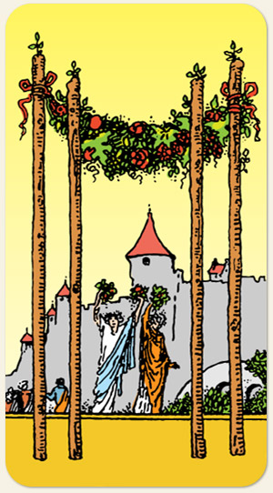

A celebração, a harmonia doméstica e o rito de passagem. Representa a estabilidade da vontade que encontra um refúgio seguro, indicando um momento de merecido descanso e alegria coletiva. É a carta das fundações sólidas, da paz após o esforço e da gratidão, marcando uma fase de união familiar, eventos sociais felizes e o estabelecimento de um porto seguro.
Fogo é a garantia da comida pronta, a estabilidade da alegria.
Positivo: Uniões, celebrações, festividades, sintonia entre energias distintas, harmonização em um único propósito, estar estável energeticamente, ter energia para manter as coisas do ritmo. Para o naipe de paus, a estabilidade não ocorre na forma de uma rotina monótona, ela representa uma festa onde tudo corre bem.
Negativo: Atrito, discórdia, disputa, competitividade nociva, falta de estabilidade e equilíbrio, algo de bom que é idealizado mas não é concretizado, falta de energia para realizar projetos.
Símbolos: Feston, Guirlanda de Flores, Frutas, Castelo, Ponte de Pedra, Céu Límpido, Fita Vermelha.
Cores: Amarelo, Laranjado, Vermelho, Verde, Azul, Branco, Cinza.